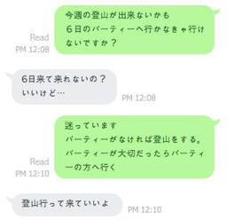
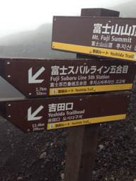
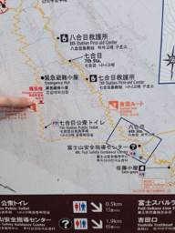
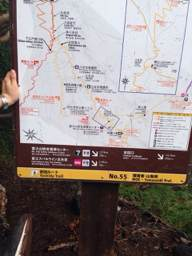
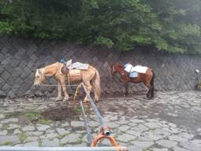
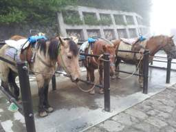
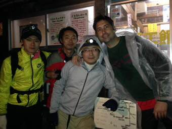
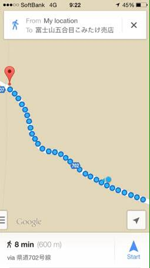
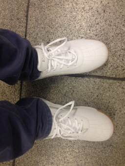

PARTICIPANTS:
DB ID: 574
Current name: びーたな
Address book name: None
User name: びーたな
Phone Number:
Key:
DB ID: 0
Current name: You
Address book name: You
User name:
Phone Number:
Key:
DB ID: 70
Current name:
Address book name:
User name: H.Ave
Phone Number:
Key:
DB ID: 573
Current name: よね
Address book name: None
User name: よね
Phone Number:
Key:
Messages:
2014/07/31 10:33:23, "574:びーたな":
富士スレ立てるの忘れてたσ(^_^;)
ありがとう。
ちなみに山開きは7月10〜9月10の様です。
2014/07/31 10:39:23, "0:You":
明日の仕事の帰りでも上ろうか？
2014/07/31 10:41:44, "574:びーたな":
明日は無理だよ〜
出来れば土日希望です。
🌅
2014/07/31 10:42:31, "574:びーたな":
入山料は1000円かかる様です
2014/07/31 10:45:03, "70:":
いいねー
明日？w
2014/07/31 11:00:22, "70:":
よねぴー！！
2014/07/31 11:09:37, "574:びーたな":
だーかーらー
土日にして下さい。
2014/07/31 11:09:46, "574:びーたな":
2014/07/31 11:13:06, "70:":
おれも土曜がいいかなー
2014/07/31 11:13:58, "574:びーたな":
2014/07/31 11:30:41, "574:びーたな":
ちなみに土曜って今週？
2014/07/31 11:45:03, "70:":
むりー
2014/07/31 11:45:30, "70:":
酸素缶買ってないよー
2014/07/31 11:56:31, "574:びーたな":
そうか、忘れてた〜
買いに行こう
かなり重要だね。
2014/07/31 12:16:35, "70:":
杖欲しいけど途中でいらなくなるからなーw
2014/07/31 12:26:26, "574:びーたな":
なるほど、杖か〜
折りたたみ出来るだけ奴があれば買いますね。
2014/07/31 13:31:46, "0:You":
夜登りだからライトもいるよ
2014/07/31 13:33:01, "70:":
もーちゃんあれば平気！
2014/07/31 13:34:00, "0:You":
そうそう！もーちゃんを持って行こう！
2014/07/31 13:34:42, "573:よね":
で？いつ登る
2014/07/31 13:35:11, "574:びーたな":
ライトの電池買わなきゃ
2014/07/31 13:35:52, "70:":
来週くらい？
2014/07/31 13:37:04, "573:よね":
来週いない
2014/07/31 13:37:51, "574:びーたな":
バス予約しなきゃ
2014/07/31 13:41:24, "70:":
再来週おれいなーい
2014/07/31 13:41:53, "573:よね":
あれ？無理じゃね
2014/07/31 13:42:14, "574:びーたな":
8月13から帰省します。
2014/07/31 13:42:26, "574:びーたな":
16までです
2014/07/31 13:42:27, "70:":
ひゃー
2014/07/31 13:42:46, "70:":
またぎりだねw
2014/07/31 17:50:17, "573:よね":
あぢ～！！
外でビール飲みたい
2014/07/31 17:50:22, "573:よね":
2014/07/31 17:51:12, "70:":
ほんまやわー！
2014/07/31 18:37:36, "573:よね":
どっか行く？
2014/07/31 18:54:54, "574:びーたな":
今日は無理やでσ(^_^;)
2014/07/31 18:54:55, "70:":
今日？
2014/07/31 18:56:05, "574:びーたな":
土、日曜なら〜
2014/07/31 19:09:47, "573:よね":
今日のつもりだったけど、家帰ってきました。
土曜日とか？どっかいく？
2014/07/31 19:15:52, "574:びーたな":
行こう〜
2014/08/01 11:28:53, "574:びーたな":
土曜日は夜打ち合わせ入ってしまいました。
日曜日は大丈夫です。
登山用グッズは日曜日に買いに行こうと思います。
2014/08/01 11:48:28, "70:":
明日辻堂でBBQだよーいく？
2014/08/01 12:02:19, "574:びーたな":
ここまでまとめ
山開きは9月10日迄
入山料1000円
持って行った方がいい物
酸素缶、杖、ライト
登山予定日は盆明けからの土、日曜。
8月16、17、23、24、30、31、
9月6、7 迄
2014/08/01 12:02:38, "70:":
まめーw
2014/08/01 12:03:29, "574:びーたな":
ありがとうです。
明日BBQは無理そうです。
すみません
2014/08/01 12:09:23, "70:":
たぼーだなー
2014/08/01 12:12:44, "574:びーたな":
土、日曜普通に仕事入るよ〜。
休みだと伝えても、、、
上目遣い？でダメですか？と聞かれるとついついOKしてしまう〜w
2014/08/01 12:14:52, "70:":
かせぐなーw
2014/08/01 13:32:41, "573:よね":
明日辻堂でBBQだよーいく？いく
2014/08/01 13:33:12, "573:よね":
田辺色々調べてくれてありがとー
2014/08/01 13:34:00, "573:よね":
富士山は、23,24希望
2014/08/01 13:34:31, "70:":
いこー
2014/08/01 13:41:15, "574:びーたな":
前回と一緒のルートでいい？ご来光ルート？
2014/08/01 13:42:41, "70:":
なべちゃんのぼりやすいのでいいよー
2014/08/01 13:43:08, "574:びーたな":
バス考えたら吉田ルートになるのかな？
2014/08/01 13:46:36, "573:よね":
前みたいに、ギリギリはやめよう。余裕持って登りたくない？
2014/08/01 14:28:21, "574:びーたな":
そうだね〜
ルートとバスの時間を決めたいですね。
ルート
http://www.fujisan-climb.jp/basic/trails/
高速バス
http://bus.fujikyu.co.jp/highw/jikokuhyo/12.html
高速バス運賃は片道27
00円です。到着まで約2時半(吉田口ルート)
他のルートは電車との組み合わせになりそうです。
2014/08/02 16:54:54, "574:びーたな":
やっぱり何度見直しても吉田口からのルートが全てにおいてちょうど良い。
バス1本で行けるし。
登山道も登りやすいし。
ご来光も見やすい。
バスの時間って前回は何時のバスに乗ったけ？忘れちゃったwご来光見る為に最終？
2014/08/02 17:30:26, "573:よね":
たしか、７時着くらいじゅかった？
2014/08/02 17:48:41, "574:びーたな":
着いたら真っ暗だったとは思います。
山頂まで8時間位かかったかな〜？
2014/08/02 17:51:00, "0:You":
まとまった、ね！
24日に新宿のヨドバシカメラ前に18:30で行こう！
2014/08/02 17:55:51, "574:びーたな":
その時間帯だと17:50か19:30になるかな？
バス時間ある？
2014/08/02 18:46:56, "0:You":
バスないかもね。
17:50にする？
19:30にする？
2014/08/02 22:01:43, "574:びーたな":
17:50出発なら
20:30五合目着
24日の日の出は5:00ちょうどなので猶予は8時間あり八合目でうどん休憩できる余裕はあると思います。
休憩したいのは自分なんですがw
2014/08/02 22:06:23, "0:You":
いいね〜
その後シャワーを浴びて仕事ですね。
完ぺきです！
2014/08/02 22:06:54, "70:":
おーいいねーさすが！
2014/08/02 22:07:42, "70:":
24って日曜やん！
2014/08/02 22:07:53, "574:びーたな":
ごめん間違った23日でしたね。
2014/08/02 22:08:29, "574:びーたな":
土曜日ね〜
2014/08/02 22:08:51, "70:":
おっけー
2014/08/02 22:13:18, "574:びーたな":
ここまでまとめ
登山予定日は盆明け
8月23日、土曜日
新宿BT 17:50 発
入山料1000円
バス片道2700円
お菓子は300円まで
持って行った方がいい物
酸素缶、杖、ライト、バナナ
2014/08/02 22:14:22, "70:":
あらめちゃやすい
2014/08/02 22:18:10, "574:びーたな":
ビール、サウナ代は別途必要ですよっとw
2014/08/02 22:18:44, "70:":
はーーい
2014/08/02 22:19:11, "573:よね":
だな
2014/08/04 18:09:15, "70:":
30日に変更って厳しいよねー！？
写真の仕事が入って土日が、、、。
2014/08/04 18:18:23, "573:よね":
俺は大丈夫
2014/08/04 18:18:58, "0:You":
大丈夫です
2014/08/04 18:19:25, "70:":
おーすまーん
2014/08/04 18:19:28, "574:びーたな":
OK〜
2014/08/18 18:34:21, "70:":
バスチケット買えるかなー
2014/08/18 18:34:57, "0:You":
ひろみ あべ invited Yuichi Ichikawa to the group.
2014/08/21 07:45:49, "70:":
みんな準備した〜？
2014/08/21 08:36:46, "0:You":
オー！
2014/08/21 08:37:24, "70:":
酸素缶買わなきゃ〜
2014/08/21 08:38:13, "0:You":
いらん、ちゃう？！
前回いらなかった。
2014/08/21 08:38:54, "70:":
持って行ったよー
2014/08/21 08:40:35, "0:You":
救急車のとき酸素を飲んで遊んでた。
気持ちいい
2014/08/21 08:42:41, "70:":
ライトももーちゃんじゃだめだよー
2014/08/21 08:46:16, "0:You":
いいライト持って来ます
2014/08/21 08:49:19, "70:":
おー
2014/08/21 12:08:14, "573:よね":
前回と同じ装備で大丈夫でしょ。
ほんとに、酸素缶いるかなぁ～。使ってた記憶があるけど～
2014/08/21 12:11:19, "70:":
Amazonでポチった！
2014/08/21 16:03:04, "573:よね":
酸素？
2014/08/21 16:08:53, "70:":
そう！
2014/08/26 11:02:16, "573:よね":
ちなみに、今週は富士山行くのかな？土曜日雨みたいだけど～
2014/08/26 11:17:44, "0:You":
そうか？！
まー！ちょっとだけだったらいいよ。
2014/08/26 11:18:18, "70:":
ね！
2014/08/26 12:31:38, "573:よね":
様子見か？
2014/08/26 12:49:25, "70:":
いきたいなー
2014/08/28 07:39:08, "70:":
土曜どーしよう？
高尾山あたりにしとく？w
2014/08/28 08:34:46, "573:よね":
田辺とも話してみるよ
2014/08/28 08:45:08, "70:":
富士山途中まで登ってもいいけど頂上まではこの感じだと厳しそうだね
2014/08/28 08:54:15, "0:You":
そうか、そうか？！
2014/08/28 09:01:19, "573:よね":
う～ん、多分ね～。雨と寒さでやられそう
2014/08/28 09:05:05, "70:":
きつそうだよねー
行くだけ行くのもありだけど
2014/08/28 09:33:10, "0:You":
スーツを着てフォレストアドベンチャーへ行く？
http://mobile.dudamobile.com/site/foret-aventure-1?url=http%3A%2F%2Fwww.foret-aventure.jp%2F#2987
2014/08/28 09:36:21, "70:":
Suit!?
2014/08/28 09:39:23, "0:You":
こんなかっこうで行ったら楽しいと思う。
http://www.y-aoyama.jp
みんなに「なんで？！」って言われる
2014/08/28 10:23:30, "70:":
オモロイけど普通に登りたいw
2014/08/28 10:24:03, "70:":
おれがmovie撮ってあげるからスーツでのぼりなよー
2014/08/28 10:25:02, "0:You":
じゃ！富士山を登ろう
2014/08/28 10:25:27, "0:You":
私が雨ぐらいで問題ない
2014/08/28 10:47:37, "70:":
おれも
2014/08/28 10:48:13, "70:":
頂上まで登れる気がしないけど登れたらどんな山でも越えられそう
人生の山もw
2014/08/28 10:49:38, "0:You":
You sent a photo.
2014/08/28 10:49:44, "0:You":
来年ここ
2014/08/28 10:51:46, "70:":
れええええ
トニー富士山でさえ死にそうだったのにw
2014/08/28 10:53:17, "0:You":
大丈夫です
2014/08/28 10:55:04, "70:":
心臓平気なの？
2014/08/28 10:56:27, "0:You":
なおったよ
心のキズを数えましょう〜
2014/08/28 10:59:01, "70:":
2014/08/28 11:03:21, "70:":
ひろみ あべ sent you a photo.
2014/08/28 11:08:41, "0:You":
オー！ラマを連れて来たら登りは楽になりそう
2014/08/28 11:10:32, "70:":
アルパカ！
2014/08/28 11:11:03, "70:":
トニーラマ荷物もって水与えるからw
2014/08/28 11:12:31, "573:よね":
で！？
2014/08/28 11:12:32, "573:よね":
どうすん？
2014/08/28 11:13:42, "70:":
チケット買えたらいってみよーか
2014/08/28 11:14:02, "70:":
天気悪くてすいてそうw
2014/08/28 11:23:18, "573:よね":
24時間テレビとかぶってるから、すいてはいないと思う
2014/08/28 11:25:19, "70:":
24で登る企画？
2014/08/28 11:25:44, "573:よね":
そう！
2014/08/28 11:26:36, "70:":
マラソンやめたんだw
2014/08/28 11:28:00, "573:よね":
いや、マラソンはやるけど、足が片方ない女の子が義足つけて、富士山昇るらしいよ
2014/08/28 11:28:21, "573:よね":
来週じゃだめか？
2014/08/28 11:28:36, "573:よね":
天気しだいだけど
2014/08/28 11:50:33, "70:":
俺は大丈夫
2014/08/28 12:05:23, "0:You":
困った、６日に予定を入れちゃった。
2014/08/28 12:06:58, "70:":
あらーじゃー今週行っちゃうかーw
2014/08/28 12:11:17, "0:You":
You sent a photo.
2014/08/28 12:11:29, "0:You":
６日は(y)
2014/08/28 12:11:32, "0:You":
None
2014/08/28 12:15:27, "70:":
だれw
2014/08/28 12:20:13, "0:You":
えんどうちゃん
2014/08/28 12:26:28, "70:":
w
2014/08/29 15:10:30, "70:":
あしたどーする？
2014/08/29 15:11:35, "0:You":
暇〜
2014/08/29 15:12:48, "70:":
のぼっちゃうかー
2014/08/29 15:17:46, "0:You":
いいよ
2014/08/29 15:22:46, "573:よね":
来週の方が天気悪そうだよね
2014/08/29 15:36:55, "70:":
そうなの？
2014/08/29 17:48:53, "573:よね":
間違え！東京は来週雨みたい。
富士山の天気予報みると、今週の土日は完全に雨。
まだ、金曜日までしか天気予報でてないけど、来週は晴れっぽい。
2014/08/29 17:49:40, "70:":
どーする？
2014/08/29 17:55:04, "573:よね":
http://n-tenki.jp/sp/?rdm=&ac=5&fc=23&sc=5030&pc=22210&page=1
2014/08/29 17:55:20, "573:よね":
来週の方が安全かな？
2014/08/29 17:59:42, "573:よね":
まー、天気だから何ともいえないけどね。
2014/08/29 18:02:33, "70:":
どっちでもいいよー
2014/08/29 18:17:48, "574:びーたな":
30日の夜から31日の朝まで富士山天気予報では曇りっぽいけどね〜。
山の天気だけになんとも言えないな。
ワイは来週でも大丈夫です。
2014/08/29 18:18:59, "70:":
明日いっちゃってもいいしw
2014/08/29 18:23:29, "574:びーたな":
ワイも明日でも大丈夫です〜。
明日ならレインパーカーあった方がいいかもね。
2014/08/30 08:26:07, "70:":
どーする？
2014/08/30 08:29:50, "0:You":
いつでもいいよ。
いつがいい？
2014/08/30 08:47:04, "70:":
今日か来週の2択だよんw
2014/08/30 08:47:51, "0:You":
行く？
2014/08/30 08:55:39, "70:":
おれはいける！
2014/08/30 08:56:08, "0:You":
私も
2014/08/30 08:58:05, "70:":
ほんまかいなースーツで行くの？w
2014/08/30 09:05:49, "573:よね":
今日行く感じになってる？
2014/08/30 09:07:53, "70:":
いっちゃう?
2014/08/30 09:18:53, "70:":
行くならまだ寝てから用意する
2014/08/30 09:43:28, "574:びーたな":
天気みたけど行けそうじゃない？
2014/08/30 10:45:33, "70:":
すげー晴れてきたー
2014/08/30 11:11:26, "70:":
どーする？
2014/08/30 11:12:19, "0:You":
新宿で待ってるよ
2014/08/30 11:12:27, "574:びーたな":
OK〜
2014/08/30 11:20:19, "70:":
何時に新宿？
2014/08/30 11:21:55, "574:びーたな":
ワイ4時には着きま〜す。
2014/08/30 11:25:44, "0:You":
早く着く人
家でゲームをして待ってていいよ。
新宿シティータワー新宿東心の509号
2014/08/30 11:56:57, "70:":
おっけー
2014/08/30 15:38:10, "574:びーたな":
今日はバス4時30以降はないようです。
6時10分発〜8時着
河口湖まで河口湖からはローカルラインになります。
それでよければ今買いますけどどうしますか？
2014/08/30 15:46:36, "70:":
かってー
2014/08/30 15:47:00, "70:":
18:10までに新宿いけばいい？
2014/08/30 15:47:49, "574:びーたな":
BTに6時でどうですか？
2014/08/30 15:48:01, "70:":
河口湖からのローカルは乗れるのかな？
2014/08/30 15:49:13, "574:びーたな":
乗れるかどうかは調べてないからわからないけど、
のれなきゃタクシーになるかな？w
2014/08/30 15:49:28, "70:":
電車という手もあるけどでぃらべてみる
2014/08/30 15:51:41, "70:":
18:35が最終っぽいなー
2014/08/30 15:51:50, "70:":
河口湖からのバス
2014/08/30 15:53:34, "70:":
河口湖から富士山5合目までは12000くらいみたい
2014/08/30 15:54:32, "0:You":
1万超えちゃってる！
2014/08/30 15:54:35, "574:びーたな":
電車？たけ〜
1200円じゃなくて？
2014/08/30 15:54:47, "70:":
タクシー
2014/08/30 15:55:37, "70:":
4人で割れば一人3千円くらい
バスはいくら？
2014/08/30 15:56:13, "574:びーたな":
あぁ〜、、w
一人4千円位ね〜。
バスは今ならんでます。
2014/08/30 15:56:43, "0:You":
http://bus.fujikyu.co.jp/highw/jikokuhyo/12.html
高速バス運賃は片道27
00円です。到着まで約2時半(吉田口ルート)
2014/08/30 15:57:51, "70:":
バスは河口湖までしかいかないんだって今日
2014/08/30 15:59:12, "70:":
なんで今日17:30いこうのないんだろ
2014/08/30 16:02:39, "574:びーたな":
買ったよ〜
バスは一人1600円
帰りは一人2700円です
2014/08/30 16:03:04, "70:":
ありがとう！
よねちゃんこないの？
2014/08/30 16:03:11, "0:You":
okTnx
2014/08/30 16:03:32, "70:":
トニー家駅からちかい？
2014/08/30 16:03:46, "0:You":
10分
2014/08/30 16:03:48, "574:びーたな":
くるでしょ？
もうバスチケットかっちゃったからw
2014/08/30 16:04:01, "70:":
はははw
2014/08/30 16:04:34, "0:You":
よね！！
2014/08/30 16:04:47, "574:びーたな":
電話にでんわw
2014/08/30 16:04:56, "70:":
ひゃー
2014/08/30 16:05:14, "70:":
もうちょいしたら向かうねー
2014/08/30 16:05:41, "574:びーたな":
バス乗り場には5時55分にはお願いします。
2014/08/30 16:06:27, "70:":
Ok
2014/08/30 16:06:46, "0:You":
Yes Sir!
2014/08/30 16:42:44, "70:":
軍手持っていかないとだよー
2014/08/30 16:43:35, "574:びーたな":
軍手はないな〜
2014/08/30 16:51:42, "574:びーたな":
今日のルートです。
出発地 富士スバルライン五合目（標高2305m）
標高差 約1450m
往復の距離 約14km
所要時間（富士スバルライン五合目～吉田口頂上） 登り：6時間10分 下り：3時間30分
剣ヶ峰往復 ＋1時間30分
2014/08/30 16:53:39, "574:びーたな":
五合目到着時刻はおおよそ
9時30〜10時かな、、、。
2014/08/30 17:09:36, "70:":
Ok
2014/08/30 17:36:48, "70:":
ティッシュわすれたー
2014/08/30 17:42:47, "574:びーたな":
ティッシュ買いました〜
2014/08/30 17:50:17, "0:You":
ok
バス停に着いた
2014/08/30 17:51:47, "574:びーたな":
26番口前？
2014/08/30 17:52:58, "70:":
どこだーそれw
2014/08/30 17:57:44, "574:びーたな":
BTの目の前です〜
2014/08/30 20:31:44, "573:よね":
2014/08/31 05:58:39, "573:よね":
ついた！
2014/08/31 06:00:16, "0:You":
いいな！
僕らは後ちょいで登っちゃいます
2014/08/31 07:41:58, "573:よね":
下山しました
2014/08/31 07:43:24, "0:You":
2014/08/31 07:45:23, "573:よね":
何時にする？
2014/08/31 07:45:52, "573:よね":
12：50くらい？
2014/08/31 07:48:16, "0:You":
今降りてる途中
9:30ぐらい着いちゃうかも
まだ変えないで
2014/08/31 07:49:51, "573:よね":
え～そうなの？
了解
2014/08/31 07:52:25, "0:You":
ごめん！
先のが嘘
まだまだらしい
変えてて
2014/08/31 07:52:41, "0:You":
You sent a photo.
2014/08/31 07:53:39, "573:よね":
12時だね。
2014/08/31 07:54:00, "0:You":
2014/08/31 08:04:06, "573:よね":
チケット売場9時にならないとあかないみたい
2014/08/31 08:06:10, "0:You":
オー！
2014/08/31 08:22:24, "573:よね":
ひろみくんはまだかかる？
2014/08/31 08:23:06, "0:You":
You sent a photo.
2014/08/31 08:23:10, "0:You":
いまここ
2014/08/31 08:23:56, "573:よね":
まだまだだね
2014/08/31 08:24:50, "0:You":
いらないコメントをしないでください
2014/08/31 08:25:26, "573:よね":
2014/08/31 08:44:43, "70:":
ついたー
2014/08/31 08:47:02, "0:You":
下がり坂が終わった
これからまっすぐな道
2014/08/31 08:50:41, "573:よね":
意外と早くつく？
2014/08/31 08:50:54, "573:よね":
チケットどうする？
2014/08/31 08:51:42, "0:You":
変更をしないで
10分で着きそう
2014/08/31 08:52:23, "573:よね":
じゃー、やばそうなら早めに言って。
2014/08/31 08:53:16, "0:You":
You sent a photo.
2014/08/31 08:54:02, "573:よね":
まー余裕見て、11時に変更しといてもいいけど
2014/08/31 08:55:24, "0:You":
10時でいいよ
バスに早く乗って寝よう
2014/08/31 09:01:19, "70:":
たぶんそこから1時間くらいかかるよー
2014/08/31 09:01:21, "573:よね":
じゃ、かえないよ
2014/08/31 09:03:19, "0:You":
You sent a photo.
2014/08/31 09:10:32, "70:":
早歩きなら間に合う
2014/08/31 09:11:25, "0:You":
もちょいで着くよ
2014/08/31 09:16:06, "573:よね":
よね sent you a photo.
2014/08/31 09:16:10, "573:よね":
よね sent you a photo.
2014/08/31 09:16:12, "573:よね":
よね sent you a photo.
2014/08/31 09:16:14, "573:よね":
よね sent you a photo.
2014/08/31 09:16:17, "0:You":
着いた
2014/08/31 09:16:17, "573:よね":
よね sent you a photo.
2014/08/31 09:16:20, "573:よね":
よね sent you a photo.
2014/08/31 09:16:25, "573:よね":
よね sent you a photo.
2014/08/31 09:16:28, "573:よね":
よね sent you a photo.
2014/08/31 09:16:32, "573:よね":
よね sent you a photo.
2014/08/31 09:16:36, "573:よね":
よね sent you a photo.

2014/08/31 09:16:39, "573:よね":
よね sent you a photo.
2014/08/31 09:16:41, "573:よね":
よね sent you a photo.
2014/08/31 09:16:46, "573:よね":
よね sent you a photo.
2014/08/31 09:16:49, "573:よね":
よね sent you a photo.
2014/08/31 09:16:53, "573:よね":
よね sent you a photo.
2014/08/31 09:18:26, "70:":
ひろみ あべ sent you a photo.
2014/08/31 09:18:28, "70:":
ひろみ あべ sent you a photo.
2014/08/31 09:18:32, "0:You":
嘘だった
2014/08/31 09:18:32, "70:":
ひろみ あべ sent you a photo.
2014/08/31 09:18:32, "70:":
ひろみ あべ sent you a photo.
2014/08/31 09:18:36, "70:":
ひろみ あべ sent you a photo.
2014/08/31 09:18:38, "70:":
ひろみ あべ sent you a photo.
2014/08/31 09:18:40, "70:":
ひろみ あべ sent you a photo.
2014/08/31 09:18:41, "70:":
ひろみ あべ sent you a photo.

2014/08/31 09:18:42, "70:":
ひろみ あべ sent you a photo.
2014/08/31 09:18:43, "70:":
ひろみ あべ sent you a photo.
2014/08/31 09:18:43, "70:":
ひろみ あべ sent you a photo.
2014/08/31 09:18:44, "70:":
ひろみ あべ sent you a photo.
2014/08/31 09:22:02, "70:":
とおいでしょ
次あるの13:00
2014/08/31 09:22:10, "70:":
どーする？
変更可能って
2014/08/31 09:22:40, "0:You":
8分で着きます
2014/08/31 09:22:52, "70:":
あと8分！？
2014/08/31 09:22:59, "0:You":
You sent a photo.
2014/08/31 09:23:10, "573:よね":
じゃかえないよ
2014/08/31 09:23:19, "70:":
おーw
2014/08/31 09:23:21, "573:よね":
そのままね
2014/08/31 09:28:08, "0:You":
We are here!
2014/08/31 10:01:31, "0:You":
You sent a photo.
2014/08/31 10:01:32, "0:You":
You sent a photo.
2014/08/31 10:01:32, "0:You":
You sent a photo.
2014/08/31 10:01:32, "0:You":
You sent a photo.
2014/08/31 10:01:33, "0:You":
You sent a photo.
2014/08/31 10:01:33, "0:You":
You sent a photo.
2014/09/05 11:47:42, "70:":
次は御嶽山！
2014/09/05 11:47:48, "70:":
ひろみ あべ sent you a photo.
2014/09/05 11:47:48, "70:":
ひろみ あべ sent you a photo.
2014/09/05 11:48:42, "573:よね":
い～ね～！
2014/09/05 11:48:50, "574:びーたな":
いいね
2014/09/05 11:49:26, "0:You":
靴を買っておきます
2014/09/05 11:50:08, "70:":
はだしでいいよ(ハート)
2014/09/05 11:55:47, "574:びーたな":
はだしで、かけてく〜
陽気に御嶽山
2014/09/05 12:17:03, "0:You":
ひろみ あべ changed the group's name to 登山部.
2014/09/05 12:17:07, "0:You":
ひろみ あべ changed the group's image.
2014/09/05 15:51:00, "0:You":
You sent a photo.
2014/09/05 15:51:11, "0:You":
買った！
2014/09/05 15:54:53, "70:":
次の登山で壊れたりしてw
2014/09/05 19:20:25, "573:よね":
富士山意外いくなら、あるていど、装備充実させないとダメだね。
2014/09/05 19:21:06, "573:よね":
多分、富士山ほど整備されてないだろうし～
2014/09/05 19:22:10, "70:":
ひろみ あべ sent you a photo.
2014/09/05 19:22:18, "70:":
こういうの
2014/09/05 19:25:19, "574:びーたな":
いい靴だね〜
2014/09/06 08:43:28, "70:":
ひろみ あべ sent you a photo.
2014/09/06 08:43:33, "70:":
ひろみ あべ sent you a photo.
2014/09/26 19:42:44, "0:You":
今感動をした。
聞いて、聞いて！
カラオケの意味は空のオーケストラですって。
オーケストラなしで歌う。
2014/09/26 19:43:18, "573:よね":
2014/09/26 19:43:24, "573:よね":
なになに
2014/09/26 19:43:28, "573:よね":
？
2014/09/26 19:45:22, "573:よね":
へーそうなんだ～。凄いね～
2014/09/26 19:45:49, "573:よね":
意外とふかいね
2014/09/26 19:49:20, "574:びーたな":
『空(から』と『オーケストラ』っていう略です。オーケストラ無しです。
2014/09/26 19:50:05, "573:よね":
意外とふかくないね
2014/09/26 19:50:43, "574:びーたな":
追伸。空は『から』と読む場合があります。
2014/09/26 19:51:19, "573:よね":
から=なにもない
2014/09/30 13:33:05, "574:びーたな":
御嶽山噴火してるーw
長野の山だよね〜
2014/09/30 13:41:17, "70:":
ひょえー
2014/09/30 14:09:21, "573:よね":
だよね、行ってたらやばかったね
2014/09/30 14:10:18, "70:":
でもいきたいやまだった
2014/09/30 14:11:47, "573:よね":
確かに、頂上綺麗だったね。でも、活火山はやめといた方がいいね。予測できないみたいだし。
まー富士山もだけど
2014/09/30 14:11:49, "573:よね":
、、、
2014/09/30 14:12:07, "70:":
2014/09/30 15:37:04, "574:びーたな":
長野の御嶽山はしばらく無理ね〜。
高尾山の隣の御岳山かな？w
2014/10/02 10:40:11, "574:びーたな":
2014/10/02 10:43:04, "70:":
かもねん
2014/10/03 15:50:38, "574:びーたな":
今日あたり新宿で打ち合わせかな？
2014/10/03 15:52:19, "574:びーたな":
次の山を何処にするか
のね。
2014/10/03 15:56:29, "70:":
おー
2014/10/03 16:22:37, "70:":
いけたらー
2014/10/03 16:23:25, "574:びーたな":
2014/10/07 16:01:40, "574:びーたな":
2014/10/07 16:02:05, "574:びーたな":
かわい〜かわ〜い〜
2014/10/07 16:02:23, "70:":
2014/10/07 16:41:30, "573:よね":
まちがいでん
2014/10/07 16:41:33, "573:よね":
わ
2014/10/07 16:41:51, "574:びーたな":
2014/10/07 23:47:32, "574:びーたな":
明日は皆既月食
見たこと無いから絶対見たい！写真とるぜよ
2014/10/07 23:49:45, "70:":
あかーいつきー
2014/10/07 23:52:04, "574:びーたな":
みーあげたー女の子ー
月食なのでメガネは必要ありません。
メガネが必要なのは日食と3D映画と私です。
2014/10/07 23:54:27, "70:":
ほぼフルムーンだけど雲がー
2014/10/07 23:55:43, "574:びーたな":
明日曇りかー。。。
晴れて欲しいなー
2014/10/07 23:57:05, "70:":
2014/10/07 23:57:37, "574:びーたな":
2014/10/08 20:41:56, "70:":
天木結婚するってばよー
2014/10/08 20:43:59, "0:You":
知ってた。
2014/10/08 20:44:07, "70:":
うそーーーー
2014/10/08 20:44:09, "70:":
なんで？
2014/10/08 20:44:52, "0:You":
そうだろう！
私があまきちゃんと結婚したかった
2014/10/08 20:45:17, "70:":
えええ
今日は飲むしかないなー
2014/10/08 20:47:33, "574:びーたな":
あまさん結婚おめでとうございます！
2014/10/08 20:47:38, "574:びーたな":
2014/10/08 20:47:56, "0:You":
写真を見た
細いでメガネかけてる奴。
2014/10/08 20:48:44, "70:":
あれ？みんな今から飲まないの？w
2014/10/08 20:49:40, "0:You":
さらちゃんが写真を見せてくれるまで信じられなかった
2014/10/08 20:50:02, "70:":
なんで？w
2014/10/08 20:50:46, "0:You":
私じゃない人と結婚をするなんて！くやしい！
2014/10/08 20:51:53, "70:":
I think so too!
2014/10/08 20:52:58, "0:You":
Let's kill that sonofabitch !
2014/10/08 20:55:35, "70:":
abso-fuckin'-lutely！
2014/10/09 00:07:42, "574:びーたな":
アイムソーリンー、
2014/10/09 00:08:03, "573:よね":
酔っぱらい
2014/10/09 00:09:19, "574:びーたな":
まさに酔っ払い流しの水出しっ放しです。
2014/10/09 00:09:31, "573:よね":
2014/10/09 00:09:48, "70:":
のんだぜー
2014/10/09 00:10:51, "573:よね":
俺らも飲んだぜよ
2014/10/09 00:11:00, "573:よね":
2014/10/09 00:11:03, "0:You":
いい女だった。
あの子。
2014/10/09 00:11:04, "574:びーたな":
飲んだねー、、、。
皆既月食ってなんだっけ？
2014/10/09 00:13:03, "574:びーたな":
深いとこまで話しあったら自分の一部ですw
2014/10/09 00:13:40, "573:よね":
2014/10/09 00:13:51, "573:よね":
だな
2014/10/09 00:13:56, "574:びーたな":
2014/10/09 00:14:20, "573:よね":
いみわかんない
2014/10/09 00:15:10, "574:びーたな":
だなっていっといてw
2014/10/09 00:15:29, "573:よね":
2014/10/09 00:18:11, "70:":
呼ばれてない！
2014/10/09 00:21:17, "574:びーたな":
広己君とは静かな所で意見交換したいです。一子相伝の師匠ともw
2014/10/09 00:21:44, "70:":
ほんまやでー
2014/10/09 01:37:28, "573:よね":
2014/10/10 12:26:34, "70:":
▼Onitsuka Tiger × ANDREA POMPILIO 2015SS COLLECTION PARTY
この度、Onitsuka Tiger × ANDREA POMPILIO 15SS COLLECTION RUNWAY
開催同日にパーティーを開催することとなりました。
是非ご来場下さいませ。
■日 程：2014 年10月17日(金)
■時 間：21:30～24:00
■場 所：IDOL 青山（東京都港区南青山5-11-9 レキシントン青山ビル B1F）
DJ’s : Kazuma Takahashi / ASHRA ( IRMA records / SUB TRAX ) Art live performance : Yukino Ohmura
■インビテーション http://www.hpfrance.com/Release/140920_OTXAPSS15PARTYINVITE-3.pdf
*ご来場の際は、上記インビテーションのご提示をお願い致します。
● PRESS CONTACT：PR01. 大橋/川口/伊藤（03-5774-1408）
▼WUT presents JULIAN ZIGERLI Talk Show
世界各地の革新的なブランドをセレクトしたショップ「WUT」が、10月12日（日）表参道「WUT」地下にて、
スイスの注目のブランド「JULIAN ZIGERLI（ジュリアン・ジゲルリ）」のデザイナーJULIAN ZIGERLI氏を迎え、
トークショー＆レセプションパーティーを開催いたします。
デザイナーが作成した2014-15AWシーズンのビデオプロモーションが世界初お披露目となりますので、
皆様ぜひお越しください。
【WUT presents JULIAN ZIGERLI】
■日 程：2014年10月12日（日）
・JULIAN & YANN TALK SHOW
■時 間： 18:00～18:30
■場 所：THE BASEMENT（渋谷区神宮前5-1-15 B1F）
・RECEPTION PARTY
■時 間：17:00～20:00
■場 所：WUT（渋谷区神宮前5-1-15 1F）
2014/10/10 12:28:05, "573:よね":
いけたら行きたい～。
2014/12/10 08:33:56, "0:You":
ひろみ あべ left the chat.